Meganeura
Chuồn Chuồn Khổng Lồ kỷ Than Đá
Tổng quan
Kỷ
Carbon
Họ
Meganeuridae
Chi
Meganeura
Dài
50 cm
Sải cánh
65 cm
Thức ăn

Meganeura là một loài côn trùng đã từng tồn tại từ kỷ Cacbon cách đây khoảng 300 triệu năm trước, nó rất giống và có liên quan đến chuồn chuồn hiện đại.
Nguồn: wikipedia.org
Phân bố
Khu vực Châu Âu
Thông tin thêm về Meganeura
Kỷ nguyên và phân bố
Theo niên đại của hóa thạch, các nhà nghiên cứu tin rằng Meganeura sống từ kỷ Cacbon cách đây khoảng 300 triệu năm trước tại nơi ngày nay là châu Âu. Những loài côn trùng khổng lồ này chủ yếu sống ở các đầm lầy với thảm thực vật thoáng và quanh các vùng nước như hồ, suối và ao. Phần lớn thời gian của chúng là ẩn náu trong thảm thực vật thấp hơn gần đầm lầy. Loài côn trùng đầu tiên sống trong những khu rừng xích đạo rộng lớn ấm áp. Trong thời gian đó, những khu rừng này bao phủ các khu vực trung tâm của Pháp.
Tên khoa học
Được mô tả và đặt tên bởi nhà cổ sinh vật học người Pháp Charles Brongniart vào năm 1885. Meganeura có nghĩa là “dây thần kinh lớn”, đề cập đến mạng lưới tĩnh mạch trên cánh của chúng.
Kích thước
Meganeura là một trong những loài côn trùng bay lớn nhất được biết biết đến. Từ đỉnh đầu cho tới chóp đuôi của một con chuồn chuồn khổng lồ trưởng thành cũng dài gần 50 cm. Với sải cánh lên tới 65 cm (25,6 in) với mỗi cánh dài 33 cm, dài hơn rất nhiều so với cả các loài chim hiện đại ngày nay.
Ngoại hình
Tất cả những con chuồn chuồn khổng lồ đều có những đường gân giống nhau trên cánh, không giống như chuồn chuồn ngày nay, chúng có những đường gân cánh khác nhau. Chúng có đôi mắt to để có thể theo dõi con mồi. Chân của chúng có gai để giúp chúng giữ chặt con mồi.
Chúng có bộ hàm mạnh mẽ cho phép chúng tấn công con mồi dưới nước. Chúng có một cặp hàm dưới mạnh mẽ với một chiếc răng để giữ những sinh vật to lớn và đang vật lộn. Cơ thể bị chia cắt của chúng có màu nâu đen với các vết màu vàng ở khắp các mặt sau.
Chế độ ăn và săn mồi
Meganeura là loài côn trùng ăn thịt và chủ yếu dựa vào thức ăn thủy sinh, đặc biệt là ăn các loài côn trùng khác, bò sát nhỏ và lưỡng cư.
Chúng là những kẻ săn mồi trên không đáng kinh ngạc với hàm dưới và cánh tay mạnh mẽ để bắt và xé xác con mồi. Chúng nổi tiếng với khả năng ăn thịt con mồi khi còn đang bay. Chế độ ăn của chuồn chuồn khổng lồ rất hiếm trong số tất cả các loài côn trùng trong hệ sinh thái ngày nay.
Khám phá
Hóa thạch xác nhận sự tồn tại của chuồn chuồn khổng lồ Meganeura 300 triệu năm trước đã được phát hiện ở một số nơi. Hóa thạch chuồn chuồn khổng lồ đầu tiên được phát hiện vào năm 1880 tại Pháp, nơi loài côn trùng này được cho là đã từng sinh sống. Charles Brongniart, nhà cổ sinh vật học người Pháp, đã nghiên cứu, mô tả và đặt tên cho hóa thạch này vào năm 1885.
Sự tuyệt chủng
Chuồn chuồn khổng lồ Meganeura và các loài côn trùng lớn khác bắt đầu tuyệt chủng vào kỷ Permi (250 triệu năm trước). Một số nhà khoa học cho rằng kích thước khổng lồ của các loài côn trùng cổ đại là do nồng độ oxy cao trong khí quyển trong thời kỳ Carbon. Sự thay đổi dần dần của bầu khí quyển trái đất trong thời kỳ Permi dẫn đến sự suy giảm oxy trong khí quyển dẫn đến sự tuyệt chủng của nhiều loài côn trùng khổng lồ.